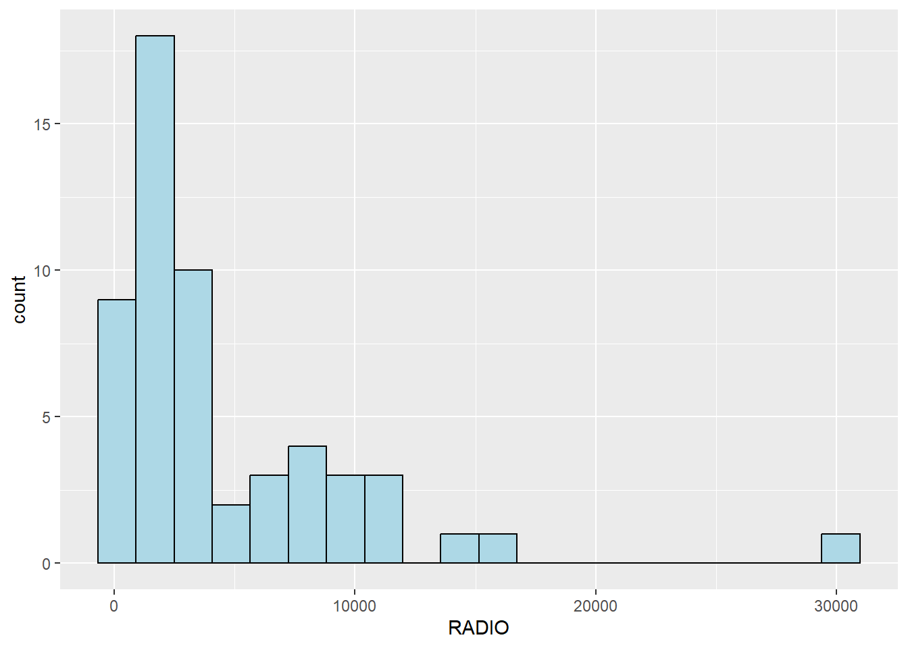
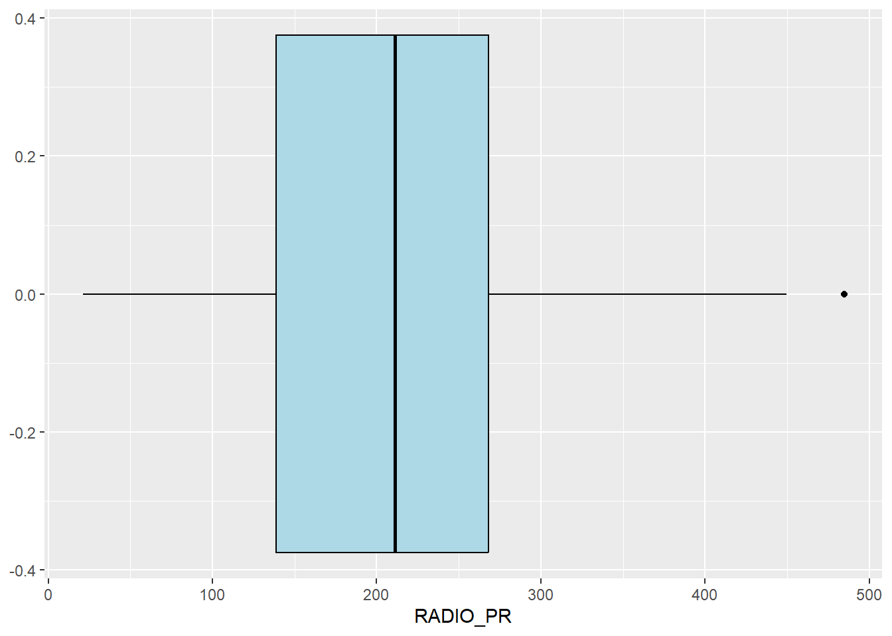
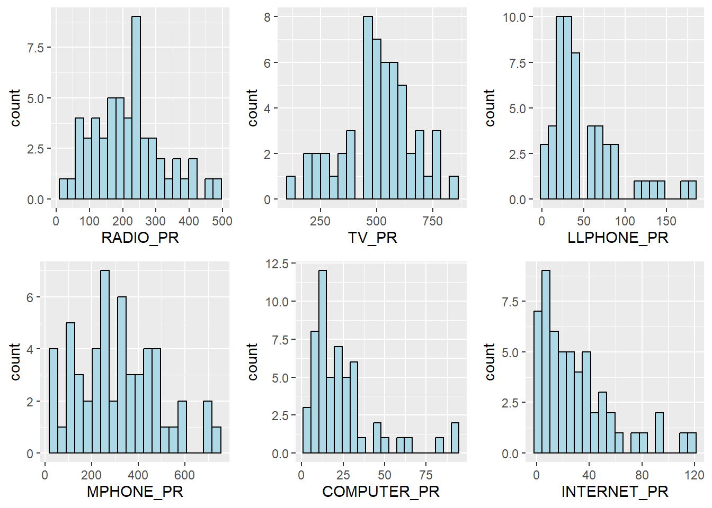
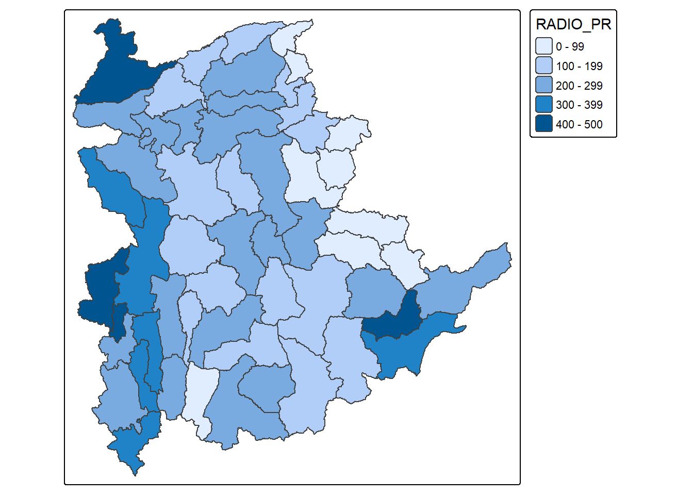
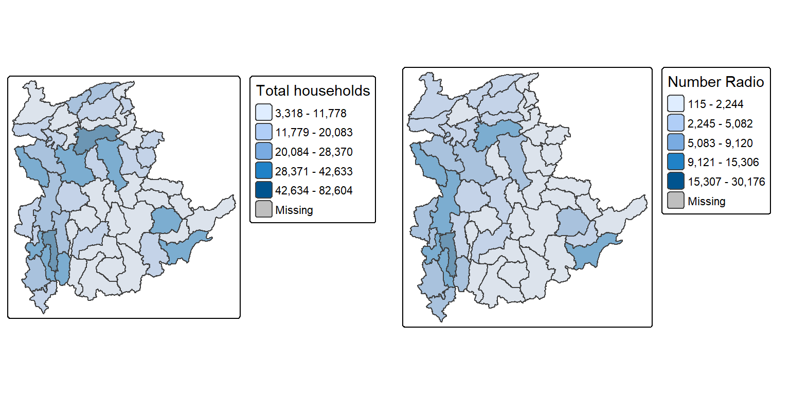
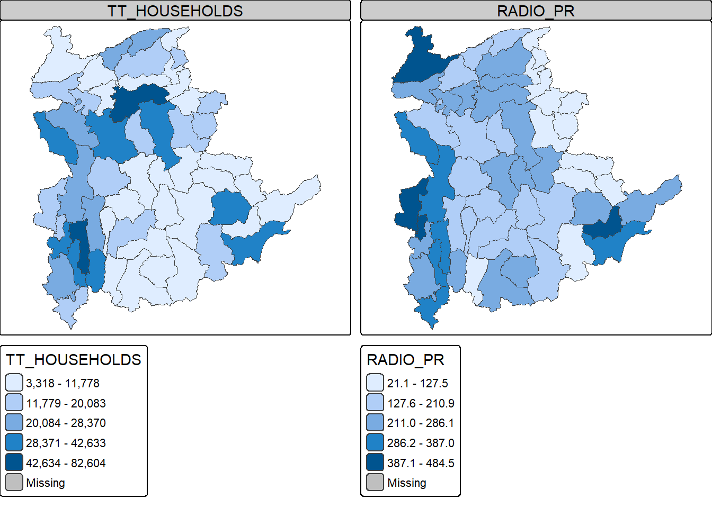

pacman::p_load(sf, spdep, tidyverse, tmap,
corrplot, psych, ggpubr, heatmaply, GGally,
cluster, factoextra, NbClust, ClustGeo)Hands-on Exercise 6: Geographical Segmentation with Spatially Constrained Clustering Techniques
1 Overview
In this hands-on exercise, the focus will be on how to delineate homogeneous region by using geographically referenced multivariate data. There are two major analysis, namely:
- hierarchical cluster analysis; and
- spatially constrained cluster analysis.
1.1 Learning outcome
By the end of this exercise, the following are covered:
- converting GIS polygon data into an sf simple feature data frame;
- converting the simple feature data frame into a SpatialPolygonsDataFrame object by using
as_Spatial()of the sf package; - performing cluster analysis by using
hclust()of base R; - performing spatially constrained cluster analysis by using
skater()of spdep; and - visualising the analysis output by using the ggplot2 and tmap packages.
2 Analytical Question
In geobusiness and spatial policy, it is common practice to delineate a market or planning area into homogeneous regions by using multivariate data. In this exercise, the focus is to delineate Shan State, Myanmar into homogeneous regions by using six Information and Communication Technology (ICT) measures: radio, television, land line phone, mobile phone, computer and internet at home.
3 The Data
Two data sets are used in this study:
| Data set | Format | Description |
|---|---|---|
| myanmar_township_boundaries | ESRI shapefile | Myanmar township boundary information |
| Shan-ICT.csv | CSV | Extract of the 2014 Population and Housing Census of Myanmar at the township level |
Both data sets were downloaded from Myanmar Information Management Unit (MIMU).
4 Installing and Loading R packages
The R packages needed for this exercise are:
- Spatial data handling: sf and spdep;
- Attribute data handling: tidyverse, especially readr, ggplot2 and dplyr;
- Choropleth mapping: tmap;
- Multivariate data visualisation and analysis: corrplot, psych, ggpubr, heatmaply and GGally; and
- Cluster analysis: cluster, factoextra, NbClust and ClustGeo.
5 Data Import and Preparation
5.1 Importing geospatial data
The Myanmar township boundary data is in ESRI shapefile format and is imported with st_read() of sf.
myanmar_sf <- st_read(dsn = "data/geospatial",
layer = "myanmar_township_boundaries")Reading layer `myanmar_township_boundaries' from data source
`C:\yxlinn\ISSS626-GAA\Hands-on_Ex\Hands-on_Ex06\data\geospatial'
using driver `ESRI Shapefile'
Simple feature collection with 330 features and 14 fields
Geometry type: MULTIPOLYGON
Dimension: XY
Bounding box: xmin: 92.17275 ymin: 9.671252 xmax: 101.1699 ymax: 28.54554
Geodetic CRS: WGS 84Shan State is split into three labels in the ST field.
myanmar_sf %>%
st_drop_geometry() %>%
count(ST, sort = TRUE) ST n
1 Yangon 45
2 Sagaing 37
3 Mandalay 28
4 Ayeyarwady 26
5 Magway 25
6 Shan (North) 24
7 Shan (South) 21
8 Kachin 18
9 Rakhine 17
10 Bago (East) 14
11 Bago (West) 14
12 Mon 10
13 Shan (East) 10
14 Tanintharyi 10
15 Chin 9
16 Nay Pyi Taw 8
17 Kayah 7
18 Kayin 7The three Shan labels are: Shan (North), Shan (South) and Shan (East).
shan_sf <- myanmar_sf %>%
filter(ST %in% c("Shan (North)", "Shan (South)", "Shan (East)")) %>%
select(c(2:7))The imported township boundary object is called shan_sf and is saved in simple feature data frame format.
shan_sfSimple feature collection with 55 features and 6 fields
Geometry type: MULTIPOLYGON
Dimension: XY
Bounding box: xmin: 96.15107 ymin: 19.29932 xmax: 101.1699 ymax: 24.15907
Geodetic CRS: WGS 84
First 10 features:
ST ST_PCODE DT DT_PCODE TS TS_PCODE
1 Shan (North) MMR015 Mongmit MMR015D008 Mongmit MMR015017
2 Shan (South) MMR014 Taunggyi MMR014D001 Pindaya MMR014006
3 Shan (South) MMR014 Taunggyi MMR014D001 Ywangan MMR014007
4 Shan (South) MMR014 Taunggyi MMR014D001 Pinlaung MMR014009
5 Shan (North) MMR015 Mongmit MMR015D008 Mabein MMR015018
6 Shan (South) MMR014 Taunggyi MMR014D001 Kalaw MMR014005
7 Shan (South) MMR014 Taunggyi MMR014D001 Pekon MMR014010
8 Shan (South) MMR014 Taunggyi MMR014D001 Lawksawk MMR014008
9 Shan (North) MMR015 Kyaukme MMR015D003 Nawnghkio MMR015013
10 Shan (North) MMR015 Kyaukme MMR015D003 Kyaukme MMR015012
geometry
1 MULTIPOLYGON (((96.96001 23...
2 MULTIPOLYGON (((96.7731 21....
3 MULTIPOLYGON (((96.78483 21...
4 MULTIPOLYGON (((96.49518 20...
5 MULTIPOLYGON (((96.66306 24...
6 MULTIPOLYGON (((96.49518 20...
7 MULTIPOLYGON (((97.14738 19...
8 MULTIPOLYGON (((96.94981 22...
9 MULTIPOLYGON (((96.75648 22...
10 MULTIPOLYGON (((96.95498 22...Since shan_sf conforms to the tidy framework, glimpse() can also be used to reveal the data type of each field:
glimpse(shan_sf)Rows: 55
Columns: 7
$ ST <chr> "Shan (North)", "Shan (South)", "Shan (South)", "Shan (South)…
$ ST_PCODE <chr> "MMR015", "MMR014", "MMR014", "MMR014", "MMR015", "MMR014", "…
$ DT <chr> "Mongmit", "Taunggyi", "Taunggyi", "Taunggyi", "Mongmit", "Ta…
$ DT_PCODE <chr> "MMR015D008", "MMR014D001", "MMR014D001", "MMR014D001", "MMR0…
$ TS <chr> "Mongmit", "Pindaya", "Ywangan", "Pinlaung", "Mabein", "Kalaw…
$ TS_PCODE <chr> "MMR015017", "MMR014006", "MMR014007", "MMR014009", "MMR01501…
$ geometry <MULTIPOLYGON [°]> MULTIPOLYGON (((96.96001 23..., MULTIPOLYGON (((…5.2 Importing aspatial data
The CSV file is imported with read_csv() of readr:
ict <- read_csv("data/aspatial/Shan-ICT.csv")The imported ICT variables are extracted from the 2014 Population and Housing Census of Myanmar. It is saved in R’s tibble data.frame format.
The summary statistics are revealed with the code chunk below:
summary(ict) District Pcode District Name Township Pcode Township Name
Length :55 Length :55 Length :55 Length :55
N.unique :14 N.unique :14 N.unique :55 N.unique :55
N.blank : 0 N.blank : 0 N.blank : 0 N.blank : 0
Min.nchar:10 Min.nchar: 4 Min.nchar: 9 Min.nchar: 4
Max.nchar:10 Max.nchar: 9 Max.nchar: 9 Max.nchar:10
Total households Radio Television Land line phone
Min. : 3318 Min. : 115 Min. : 728 Min. : 20.0
1st Qu.: 8711 1st Qu.: 1260 1st Qu.: 3744 1st Qu.: 266.5
Median :13685 Median : 2497 Median : 6117 Median : 695.0
Mean :18369 Mean : 4487 Mean :10183 Mean : 929.9
3rd Qu.:23471 3rd Qu.: 6192 3rd Qu.:13906 3rd Qu.:1082.5
Max. :82604 Max. :30176 Max. :62388 Max. :6736.0
Mobile phone Computer Internet at home
Min. : 150 Min. : 20.0 Min. : 8.0
1st Qu.: 2037 1st Qu.: 121.0 1st Qu.: 88.0
Median : 3559 Median : 244.0 Median : 316.0
Mean : 6470 Mean : 575.5 Mean : 760.2
3rd Qu.: 7177 3rd Qu.: 507.0 3rd Qu.: 630.5
Max. :48461 Max. :6705.0 Max. :9746.0 There are 11 fields and 55 observations in the tibble, with no missing values.
5.3 Deriving new variables using dplyr package
The unit of measurement of the ICT fields is the number of households. Using these values directly would be biased by the total number of households. In general, townships with more households will also have more households owning a radio, a television and so on.
To overcome this, the penetration rate of each ICT variable is derived as households per 1,000 households, using the code chunk below:
ict_derived <- ict %>%
rename(DT_PCODE = `District Pcode`, DT = `District Name`,
TS_PCODE = `Township Pcode`, TS = `Township Name`,
TT_HOUSEHOLDS = `Total households`,
RADIO = Radio, TV = Television,
LLPHONE = `Land line phone`, MPHONE = `Mobile phone`,
COMPUTER = Computer, INTERNET = `Internet at home`) %>%
mutate(RADIO_PR = RADIO / TT_HOUSEHOLDS * 1000,
TV_PR = TV / TT_HOUSEHOLDS * 1000,
LLPHONE_PR = LLPHONE / TT_HOUSEHOLDS * 1000,
MPHONE_PR = MPHONE / TT_HOUSEHOLDS * 1000,
COMPUTER_PR = COMPUTER / TT_HOUSEHOLDS * 1000,
INTERNET_PR = INTERNET / TT_HOUSEHOLDS * 1000)The summary statistics of the newly derived penetration rates:
summary(ict_derived) DT_PCODE DT TS_PCODE TS TT_HOUSEHOLDS
Length :55 Length :55 Length :55 Length :55 Min. : 3318
N.unique :14 N.unique :14 N.unique :55 N.unique :55 1st Qu.: 8711
N.blank : 0 N.blank : 0 N.blank : 0 N.blank : 0 Median :13685
Min.nchar:10 Min.nchar: 4 Min.nchar: 9 Min.nchar: 4 Mean :18369
Max.nchar:10 Max.nchar: 9 Max.nchar: 9 Max.nchar:10 3rd Qu.:23471
Max. :82604
RADIO TV LLPHONE MPHONE
Min. : 115 Min. : 728 Min. : 20.0 Min. : 150
1st Qu.: 1260 1st Qu.: 3744 1st Qu.: 266.5 1st Qu.: 2037
Median : 2497 Median : 6117 Median : 695.0 Median : 3559
Mean : 4487 Mean :10183 Mean : 929.9 Mean : 6470
3rd Qu.: 6192 3rd Qu.:13906 3rd Qu.:1082.5 3rd Qu.: 7177
Max. :30176 Max. :62388 Max. :6736.0 Max. :48461
COMPUTER INTERNET RADIO_PR TV_PR
Min. : 20.0 Min. : 8.0 Min. : 21.05 Min. :116.0
1st Qu.: 121.0 1st Qu.: 88.0 1st Qu.:138.95 1st Qu.:450.2
Median : 244.0 Median : 316.0 Median :210.95 Median :517.2
Mean : 575.5 Mean : 760.2 Mean :215.68 Mean :509.5
3rd Qu.: 507.0 3rd Qu.: 630.5 3rd Qu.:268.07 3rd Qu.:606.4
Max. :6705.0 Max. :9746.0 Max. :484.52 Max. :842.5
LLPHONE_PR MPHONE_PR COMPUTER_PR INTERNET_PR
Min. : 2.78 Min. : 36.42 Min. : 3.278 Min. : 1.041
1st Qu.: 22.84 1st Qu.:190.14 1st Qu.:11.832 1st Qu.: 8.617
Median : 37.59 Median :305.27 Median :18.970 Median : 22.829
Mean : 51.09 Mean :314.05 Mean :24.393 Mean : 30.644
3rd Qu.: 69.72 3rd Qu.:428.43 3rd Qu.:29.897 3rd Qu.: 41.281
Max. :181.49 Max. :735.43 Max. :92.402 Max. :117.985
Note
Six new fields have been added to the data frame: RADIO_PR, TV_PR, LLPHONE_PR, MPHONE_PR, COMPUTER_PR, and INTERNET_PR.
6 Exploratory Data Analysis (EDA)
6.1 EDA using statistical graphics
The distribution of the variables (e.g. the number of households with radio) can be plotted with standard EDA graphics.
A histogram is useful to identify the overall distribution of the data values (e.g. left skew, right skew or normal distribution):
ggplot(data = ict_derived,
aes(x = `RADIO`)) +
geom_histogram(bins = 20,
color = "black",
fill = "light blue")
Note
Analysis:
The distribution is heavily right-skewed. Most townships own approximately 1,000 to 5,000 radios, but there is a small handful that owns more than 10,000 radios.
Boxplot is useful to detect outliers.
ggplot(data = ict_derived,
aes(x = `RADIO`)) +
geom_boxplot(color = "black",
fill = "light blue")
Note
Analysis:
The boxplot shows there are three outliers. These three townships can also be seen from the histogram, where two are clustered around 14,000 to 17,000, and one isolated near 30,000.
Next, the distribution of the newly derived variables (i.e. radio penetration rate) is plotted:
ggplot(data = ict_derived,
aes(x = `RADIO_PR`)) +
geom_histogram(bins = 20,
color = "black",
fill = "light blue")
ggplot(data = ict_derived,
aes(x = `RADIO_PR`)) +
geom_boxplot(color = "black",
fill = "light blue")
Note
Analysis:
Compared to the raw RADIO count, the distribution of RADIO_PR looks much closer to a normal distribution, with most townships sitting between 100 and 300 radios per 1,000 households, and a peak around 225 to 250. There is still a slight right skew, but not as extreme as before.
The boxplot further supports the findings. It is roughly centred, with the median line close to the middle rather than pulled to one edge. Only one outlier remains compared to three before.
This confirms what we expected. Most of the skew and outliers in the raw RADIO count were driven by township size instead of actual differences in radio ownership, and standardising to a rate removes most of that effect.
Next, multiple histograms are plotted together to compare the distributions of all six penetration rates in the ict_derived data frame.
radio <- ggplot(data = ict_derived,
aes(x = `RADIO_PR`)) +
geom_histogram(bins = 20,
color = "black",
fill = "light blue")
tv <- ggplot(data = ict_derived,
aes(x = `TV_PR`)) +
geom_histogram(bins = 20,
color = "black",
fill = "light blue")
llphone <- ggplot(data = ict_derived,
aes(x = `LLPHONE_PR`)) +
geom_histogram(bins = 20,
color = "black",
fill = "light blue")
mphone <- ggplot(data = ict_derived,
aes(x = `MPHONE_PR`)) +
geom_histogram(bins = 20,
color = "black",
fill = "light blue")
computer <- ggplot(data = ict_derived,
aes(x = `COMPUTER_PR`)) +
geom_histogram(bins = 20,
color = "black",
fill = "light blue")
internet <- ggplot(data = ict_derived,
aes(x = `INTERNET_PR`)) +
geom_histogram(bins = 20,
color = "black",
fill = "light blue")ggarrange() of ggpubr groups the six histograms into one figure:
ggarrange(radio, tv, llphone, mphone, computer, internet,
ncol = 3,
nrow = 2)
Note
Analysis:
RADIO_PR and TV_PR are close to normal, with a central peak and roughly even spread on both sides. On the other hand, the other four (LLPHONE_PR, MPHONE_PR, COMPUTER_PR, and INTERNET_PR) are right-skewed. Most townships cluster at the low end, with a long tail of higher values.
This tracks with adoption levels. Radio and TV are widespread enough that most townships land in a similar range. Mobile phone, land-line, computer and internet are rarer and concentrated in fewer townships, hence the skew.
6.2 EDA using choropleth map
6.2.1 Joining geospatial data with aspatial data
Before a choropleth map can be prepared, the geospatial object (shan_sf) and the aspatial data frame (ict_derived) need to be combined into one. This is done with left_join() of dplyr, with shan_sf as the base object and ict_derived as the join table. The unique identifier used to join both objects is TS_PCODE.
shan_sf <- left_join(shan_sf,
ict_derived, by = c("TS_PCODE" = "TS_PCODE"))
write_rds(shan_sf, "data/rds/shan_sf.rds")No new output object is created by the join. Instead, the data fields from ict_derived are added onto the existing shan_sf data frame.
shan_sf <- read_rds("data/rds/shan_sf.rds")6.2.2 Preparing a choropleth map
To have a quick look at the distribution of the Radio penetration rate across Shan State at the township level, a choropleth map is prepared using qtm() of tmap.
qtm(shan_sf, "RADIO_PR")
To check whether the distribution shown above is biased by the underlying number of households per township, two choropleth maps are prepared side by side: one for the total number of households (TT_HOUSEHOLDS) and one for the total number of households with radio (RADIO).
TT_HOUSEHOLDS.map <- tm_shape(shan_sf) +
tm_fill(col = "TT_HOUSEHOLDS",
n = 5,
style = "jenks",
title = "Total households") +
tm_borders(alpha = 0.5)
RADIO.map <- tm_shape(shan_sf) +
tm_fill(col = "RADIO",
n = 5,
style = "jenks",
title = "Number Radio") +
tm_borders(alpha = 0.5)
tmap_arrange(TT_HOUSEHOLDS.map, RADIO.map,
asp = NA, ncol = 2)
Note
Notice that townships with relatively more households also show relatively higher radio ownership, which is exactly the bias the penetration rate is meant to remove.
The total households and radio penetration rate are now plotted side by side instead.
tm_shape(shan_sf) +
tm_polygons(c("TT_HOUSEHOLDS", "RADIO_PR"),
style = "jenks") +
tm_facets(sync = TRUE, ncol = 2) +
tm_legend(legend.position = c("right", "bottom")) +
tm_layout(outer.margins = 0, asp = 0)
Note
Analysis:
Once the household-count bias is removed, the two maps no longer agree. Several townships with a moderate number of households show among the highest radio penetration rates, while some of the larger townships by household count show relatively low penetration rates.